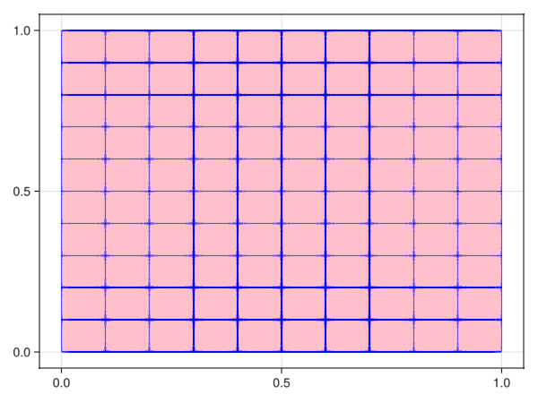
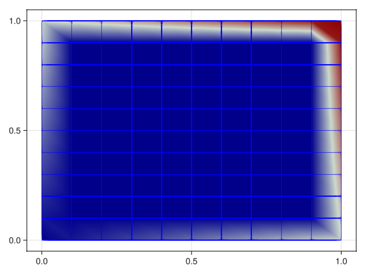
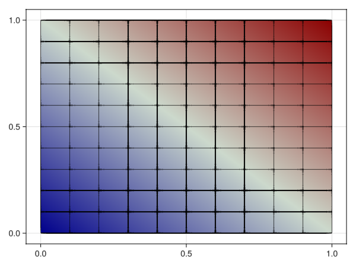

Laplace
Problem statement
In this example, we show how to solve the "Hello, world" PDE example: the Poisson equation on the unit square with Dirichlet boundary conditions.
\[\left\lbrace \begin{aligned} -\Delta u = f \ &\text{in} \ \Omega,\\ u = g \ &\text{on}\ \partial\Omega,\\ \end{aligned} \right.\]
with $f=0$ and $g(x)=\text{sum}(x)$.
Numerical scheme
Implementation
Load dependencies form Julia stdlib.
using LinearAlgebraImport other dependencies
import GalerkinToolkit as GT
import PartitionedSolvers as PS
import ForwardDiff
import GLMakie as MakieGenerate the computational mesh.
domain = (0,1,0,1)
cells = (10,10)
mesh = GT.cartesian_mesh(domain,cells)Visualize the mesh.
Makie.plot(mesh,color=:pink,strokecolor=:blue)
Define the Dirichlet boundary.
dirichlet_tag = "dirichlet"
GT.label_boundary_faces!(mesh;physical_name=dirichlet_tag)Defile computational domains.
Ω = GT.interior(mesh)
Γd = GT.boundary(mesh;physical_names=[dirichlet_tag])Define differential operators
const ∇ = ForwardDiff.gradient
Δ(f,x) = tr(ForwardDiff.jacobian(y->∇(f,y),x))Δ (generic function with 1 method)Define manufactured fields.
g = GT.analytical_field(sum,Ω)
f = GT.analytical_field(x->-Δ(g.definition,x),Ω)Define the interpolation space.
k = 1
V = GT.lagrange_space(Ω,k;dirichlet_boundary=Γd)Interpolate Dirichlet values.
T = Float64
uhd = GT.dirichlet_field(T,V)
GT.interpolate_dirichlet!(g,uhd)Visualize the Dirichlet field.
Makie.plot(Ω,color=uhd,strokecolor=:blue)
Define numerical integration.
degree = 2*k
dΩ = GT.measure(Ω,degree)Define weak form.
a = (u,v) -> GT.∫( x->∇(u,x)⋅∇(v,x), dΩ)
l = v -> GT.∫( x->v(x)*f(x), dΩ)Assemble the problem using the automatic assembly loop generator
p = GT.linear_problem(uhd,a,l)Solve the problem
s = PS.LinearAlgebra_lu(p)
s = PS.solve(s)Build the FE solution.
uh = GT.solution_field(uhd,s)Visualize the solution.
Makie.plot(Ω;color=uh,strokecolor=:black)
Compute the L2 norm of the discretization error.
eh = x -> uh(x) - g(x)
el2 = GT.∫( x->abs2(eh(x)), dΩ) |> sum |> sqrt8.69468118349516e-16Final program
module Program
using LinearAlgebra
import GalerkinToolkit as GT
import PartitionedSolvers as PS
import ForwardDiff
import GLMakie as Makie
function main(;domain,cells)
mesh = GT.cartesian_mesh(domain,cells)
dirichlet_tag = "dirichlet"
GT.label_boundary_faces!(mesh;physical_name=dirichlet_tag)
Ω = GT.interior(mesh)
Γd = GT.boundary(mesh;physical_names=[dirichlet_tag])
∇ = ForwardDiff.gradient
Δ(f,x) = tr(ForwardDiff.jacobian(y->∇(f,y),x))
g = GT.analytical_field(sum,Ω)
f = GT.analytical_field(x->-Δ(g.definition,x),Ω)
k = 1
V = GT.lagrange_space(Ω,k;dirichlet_boundary=Γd)
T = Float64
uhd = GT.dirichlet_field(T,V)
GT.interpolate_dirichlet!(g,uhd)
degree = 2*k
dΩ = GT.measure(Ω,degree)
a = (u,v) -> GT.∫( x->∇(u,x)⋅∇(v,x), dΩ)
l = v -> GT.∫( x->v(x)*f(x), dΩ)
p = GT.linear_problem(uhd,a,l)
s = PS.LinearAlgebra_lu(p)
s = PS.solve(s)
uh = GT.solution_field(uhd,s)
eh = x -> uh(x) - g(x)
el2 = GT.∫( x->abs2(eh(x)), dΩ) |> sum |> sqrt
end
end # moduleMain.ProgramRun it for a 2d case
Program.main(domain=(0,1,0,1),cells=(10,10))8.69468118349516e-16Run it for a 3d case
Program.main(domain=(0,1,0,1,0,1),cells=(10,10,10))4.2374456472394323e-16This page was generated using Literate.jl.